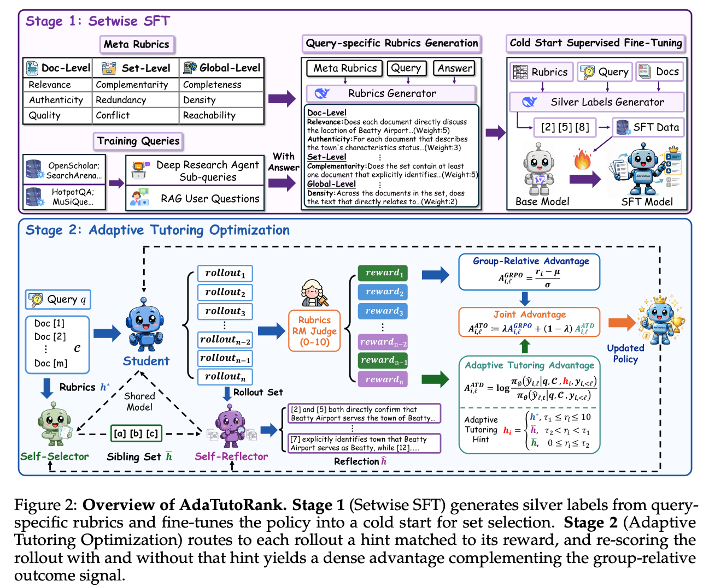
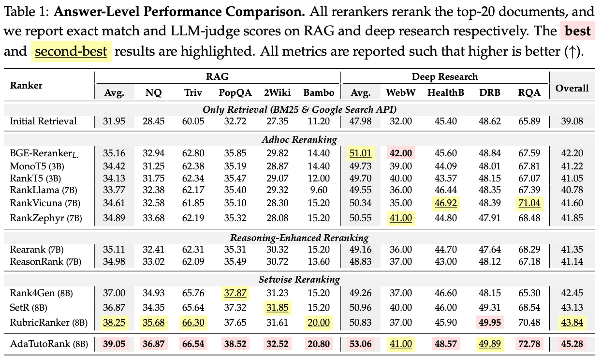
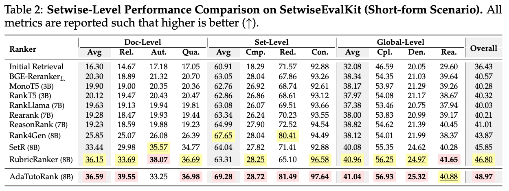
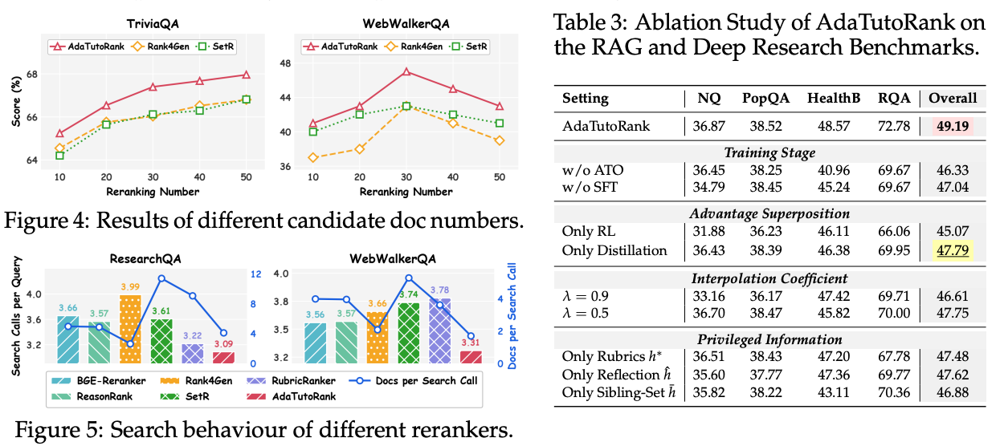
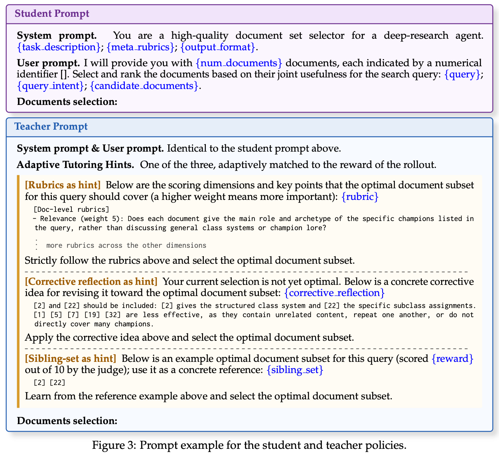
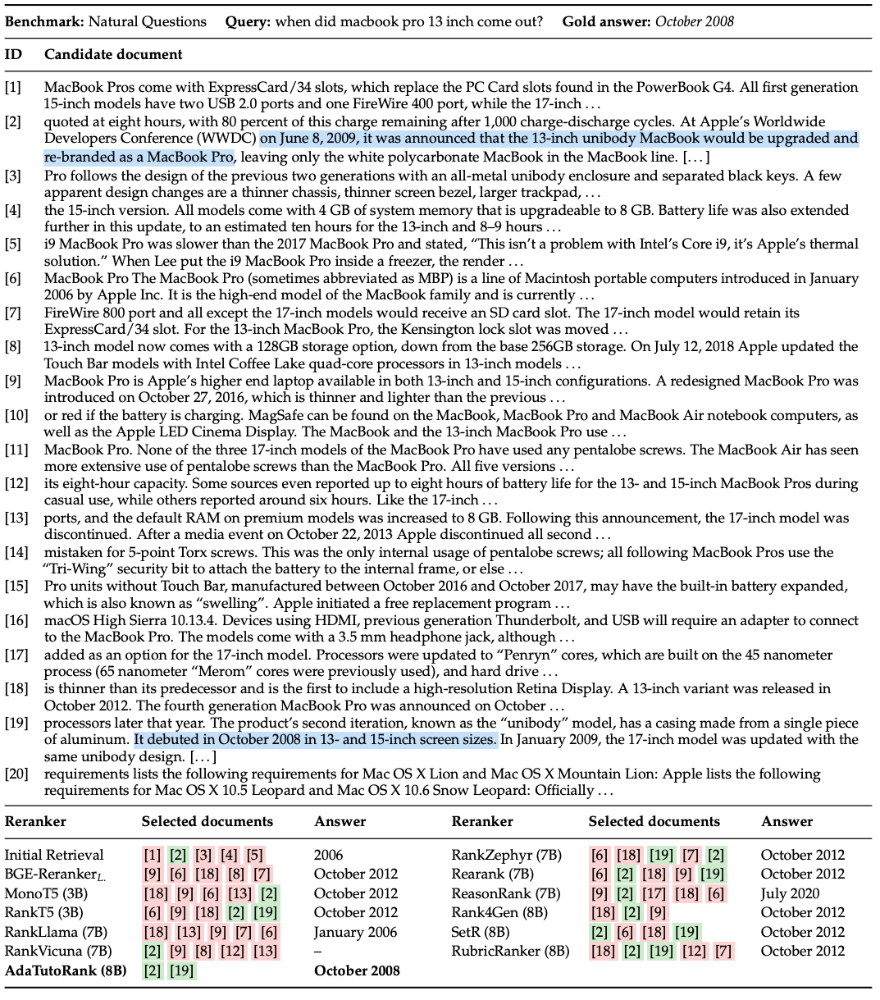
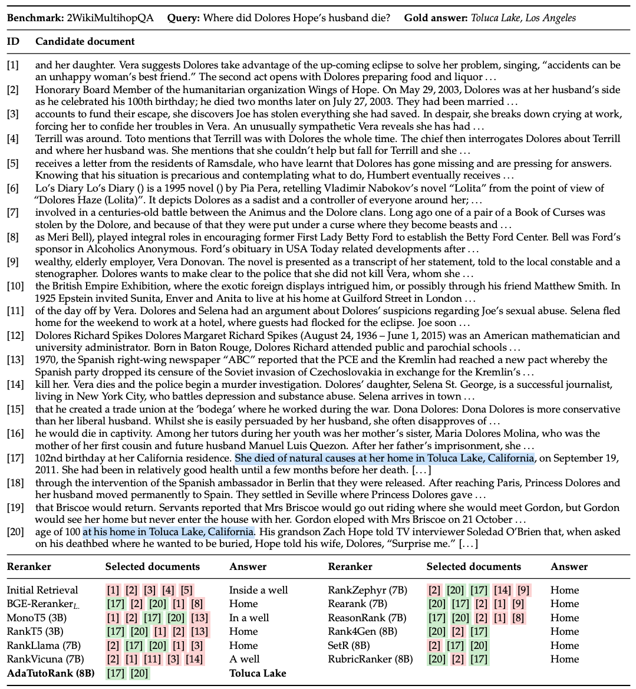

Method

Answer-Level Results

Setwise-Level Results

Ablation

Hint Dynamics

Case Study


BibTeX
@article{jiang2026adatutorank,
title = {AdaTutoRank: Learning to Rerank Document Sets via Adaptive Tutoring Optimization for RAG and Deep Research},
author = {Jiang, Kailin and Liu, Lei and Xi, Jian and Chen, Yangqi and Xu, Hui and
Zhao, Hongwei and Li, Bin and Lu, Yu and Shi, Haibo},
year = {2026}
}